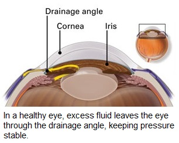
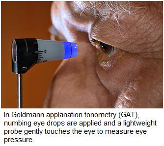
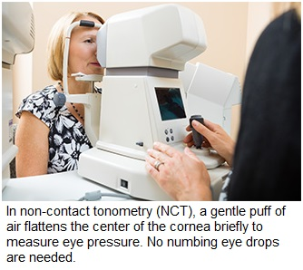

Glaucoma refers to a group of related eye disorders that all cause damage to the optic nerve that carries information from the eye to the brain. Glaucoma usually has few or no initial symptoms. It usually happens when fluid builds up in the front part of eye. That extra fluid increases the pressure in eye (Intraocular pressure-IOP), damaging the optic nerve. But it also can occur when intraocular pressure (IOP) is normal. If untreated or uncontrolled, glaucoma first causes peripheral vision loss and eventually can lead to blindness.
Glaucoma is a leading cause of blindness for people over 60 years old. But blindness from glaucoma can often be prevented with early treatment.

Primary open-angle glaucoma This common type of glaucoma gradually reduces your peripheral vision without other symptoms. By the time you notice it, permanent damage already has occurred.
If your IOP remains high, the destruction caused by POAG can progress until tunnel vision develops, and you will be able to see only objects that are straight ahead. Ultimately, all vision can be lost, causing blindness.
Acute angle-closure glaucoma Also called narrow-angle glaucoma, acute angle-closure glaucoma produces sudden symptoms such as eye pain, headaches, halos around lights, dilated pupils, vision loss, red eyes, nausea and vomiting.
These signs constitute a medical emergency. The attack may last for a few hours, and then return again for another round, or it may be continuous without relief. Each attack can cause progressively more vision loss.
Normal-tension glaucoma Like POAG, normal-tension glaucoma (also called normal-pressure glaucoma, low-tension glaucoma or low-pressure glaucoma) is a type of open-angle glaucoma that can cause visual field loss due to optic nerve damage. But in normal-tension glaucoma, the eye's IOP remains in the normal range.
Also, pain is unlikely and permanent damage to the eye's optic nerve may not be noticed until symptoms such as tunnel vision occur.
The cause of normal-tension glaucoma is not known. But many doctors believe it is related to poor blood flow to the optic nerve. Normal-tension glaucoma is more common in those who are Japanese, are female and/or have a history of vascular disease.
Pigmentary glaucoma This rare form of glaucoma is caused by clogging of the drainage angle of the eye by pigment that has broken loose from the iris, reducing the rate of aqueous outflow from the eye. Over time, an inflammatory response to the blocked angle damages the drainage system.
You are unlikely to notice any symptoms with pigmentary glaucoma, though some pain and blurry vision may occur after exercise. Pigmentary glaucoma most frequently affects white males in their mid-30s to mid-40s.
Secondary glaucoma Symptoms of chronic glaucoma following an eye injury could indicate secondary glaucoma, which also may develop with presence of eye infection, inflammation, a tumor or enlargement of the lens due to a cataract.
Congenital glaucoma Symptoms of chronic glaucoma following an eye injury could indicate secondary glaucoma, which also may develop with presence of eye infection, inflammation, a tumor or enlargement of the lens due to a cataract.
Glaucoma often is called the "silent thief of sight," because most types typically cause no pain and produce no symptoms until noticeable vision loss occurs.
For this reason, glaucoma often progresses undetected until the optic nerve already has been irreversibly damaged, with varying degrees of permanent vision loss.
But with acute angle-closure glaucoma, symptoms that occur suddenly can include blurry vision, halos around lights, intense eye pain, nausea and vomiting. If you have these symptoms, make sure you see an eye care practitioner or visit the emergency room immediately so steps can be taken to prevent permanent vision loss.
During routine eye exams, a tonometer is used to measure your intraocular pressure, or IOP. Your eye typically is numbed with eye drops, and a small probe gently rests against your eye's surface. Other tonometers send a puff of air onto your eye's surface.
An abnormally high IOP reading indicates a problem with the amount of fluid (aqueous humor) in the eye. Either the eye is producing too much fluid, or it's not draining properly.
Normally, IOP should be below 21 mmHg (millimeters of mercury) — a unit of measurement based on how much force is exerted within a certain defined area.
 
If your IOP is higher than 30 mmHg, your risk of vision loss from glaucoma is 40 times greater than someone with intraocular pressure of 15 mmHg or lower. This is why glaucoma treatments such as eye drops are designed to keep IOP low.
Other methods of monitoring glaucoma involve the use of sophisticated imaging technology — such as scanning laser polarimetry (SLP), optical coherence tomography (OCT) and confocal scanning laser ophthalmoscopy — to create baseline images and measurements of the eye's optic nerve and internal structures.
Then, at specified intervals, additional images and measurements are taken to make sure no changes have occurred over time that might indicate progressive glaucoma damage.
Visual field testing is a way for your eye doctor to determine if you are experiencing vision loss from glaucoma. Visual field testinginvolves staring straight ahead into a machine and clicking a button when you notice a blinking light in your peripheral vision. The visual field test may be repeated at regular intervals to make sure you are not developing blind spots from damage to the optic nerve or to determine the extent or progression of vision loss from glaucoma.
Gonioscopy also may be performed to make sure the aqueous humor (or "aqueous") can drain freely from the eye. In gonioscopy, special lenses are used with a biomicroscope to enable your eye doctor to see the structure inside the eye (called the drainage angle) that controls the outflow of aqueous and thereby affects intraocular pressure. Ultrasound biomicroscopy is another technique that may be used to evaluate the drainage angle.
Treatment can involve glaucoma surgery, lasers or medication, depending on the severity. Eye drops with medication aimed at lowering IOP usually are tried first to control glaucoma.
Because glaucoma often is painless, people may become careless about strict use of eye drops that can control eye pressure and help prevent permanent eye damage.
In fact, non-compliance with a program of prescribed glaucoma medication is a major reason for blindness caused by glaucoma. If you find that the eye drops you are using for glaucoma are uncomfortable or inconvenient, never discontinue them without first consulting your eye doctor about a possible alternative therapy.
Can you reduce your risk for glaucoma? According to a recent European study, exercise might do the trick for some people.
Researchers in the U.K. have found that higher levels of physical exercise appear to provide a long-term benefit of reducing the incidence of low ocular perfusion pressure (OPP), an important risk factor for glaucoma. OPP is a mathematical value that is calculated using a person's intraocular pressure and his or her blood pressure.
The results showed that study participants who engaged in moderate physical exercise approximately 15 years prior to the study had a 25 percent reduced risk of low OPP that could lead to glaucoma.
Glaucoma can be diagnosed early and blindness can be prevented through regular eye examination especially after 40 yrs age. also if any of your blood relatives has or had history of glaucoma it’s important to get screened for glaucoma by your ophthalmologist at appropriate time.